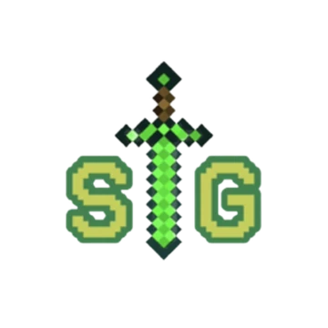

About SkyGen
SkyGen is a Minecraft Bedrock SkyGen experience with floating islands, block generators, and PvP encounters woven into a tycoon-style progression loop. The project rapidly grew after its Discord launch in June 2021, establishing one of the most recognizable SkyGen servers for Bedrock players.

Generators that never feel stale, islands where any neighbor could be a rival, and steady updates that kept the meta fresh. SkyGen focuses on rewarding progression while keeping the thrill of PvP risk alive.
Key milestones
What the wiki covers
Server history
Major updates, seasonal changes, and the community milestones that shaped SkyGen.
Progression tips
Guides on generators, economy flow, and strategies to maximize your island growth.
Community knowledge
Player-made guides, lore snippets, and memorable moments curated by veteran members.
Looking forward
Development is semi-active, but veteran players will receive discounts and recognition.
Have facts or stories to add? Connect through Discord and help expand this archive.